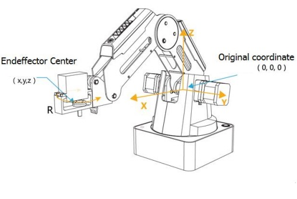
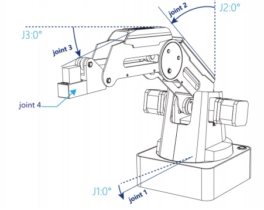
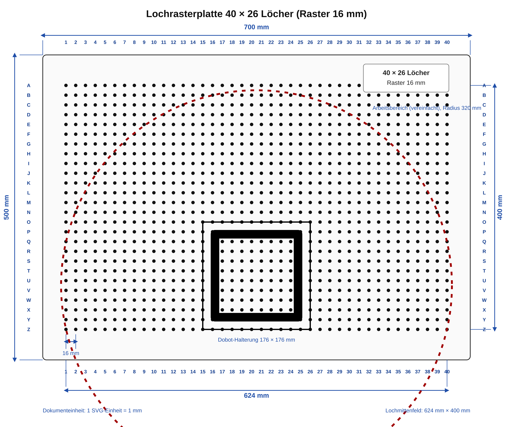

Vorstellung
Das Roboterkit von DOBOT wurde im September 2018 der AG von Profiroll Technologies
aus Bad Düben zur Verfügung gestellt.
Die AG Young Engineers bedankt sich herzlich für die Unterstützung.
Der Dobot Magician ist ein kompakter 4-Achsen-Desktop-Roboterarm für Ausbildung,
Labor und einfache Automatisierungsversuche.
Der Dobot Magician eignet sich gut für den Einstieg in die Robotik.
Mit ihm lassen sich Koordinatensysteme, Bewegungsabläufe und Programmierung anschaulich erklären.
Durch Saug- und Greifwerkzeuge können einfache Greif- und Pick-and-Place-Aufgaben praktisch umgesetzt werden.
Zusätzlich sind Anwendungen wie Zeichnen, Schreiben, 3D-Druck und Lasergravur möglich.

Arbeitsbereich
Der Arbeitsbereich des Dobot Magician wird durch die mechanischen Grenzen des Roboterarms bestimmt.
Die Abbildung zeigt die Reichweite aus Seitenansicht und Draufsicht. Für praktische Versuche ist diese
Darstellung wichtig, damit Arbeitsflächen, Bauteile und Sicherheitsabstände sinnvoll geplant werden können.
Die maximale Reichweite beträgt ca. 320 mm in der X-Richtung und ca. 240 mm in der Y-Richtung. Die maximale Höhe in Z-Richtung beträgt ca. 150 mm. Die Abbildung zeigt die Reichweite aus Seitenansicht und Draufsicht.

Koordinatensysteme


DobotStudio
Auf der Startseite von DobotStudio sind die wichtigsten Funktionen schnell erreichbar.
Die Software ist für Windows, MacOS und Linux verfügbar.
Für den Einstieg eignen sich besonders:
· die Direktsteuerung und
· Teach In und Playback von Bewegungsabläufen,
Für Fortgeschrittene ist
· das visuelle Programmieren mit Blockly und
· das Programmieren mit Python.
verfügbar

Bedienung
Für den Unterricht oder eine AG bietet sich eine schrittweise Einführung an:
- Roboter und Arbeitsbereich kennenlernen.
- DobotStudio starten und Verbindung zum Roboter herstellen.
- Den Roboter zunächst per Direktsteuerung bewegen.
- Bewegungsabläufe per Teach In aufnehmen und wiedergeben.
- Bewegungsabläufe per Blockly erstellen und testen.
- Bewegungsabläufe per Python-Skript erstellen und testen.
Wichtig: Vor jedem praktischen Versuch sollte der Arbeitsbereich frei sein. Bewegungen des Roboterarms müssen langsam und kontrolliert getestet werden. 🦾
Arbeitsplatte
Eine Kunststoff-Lochrasterplatte dient als Arbeitsfläche des Dobot Magician.
Sie ist mit einem Raster versehen, das die Positionierung von Bauteilen erleichtert.
Die Platte hat Außenmaße von etwa 700 mm × 500 mm.
Das Lochraster besteht aus 40 × 26 Löchern.
Kunststoffwürfel dienen als Teile für den Sauggreifer.
Sie besitzen unten ein 3×3-Raster aus kegelförmigen Steckzapfen ohne mittleren Zapfen und oben passende Löcher,
sodass sie zuverlässig auf der Lochrasterplatte positioniert und zusätzlich übereinander gestapelt werden können.
Auf der Arbeitsplatte können auch andere Komponenten befestigt werden.

Projekte
Hier sind einige Projekte, die mit dem Dobot Magician umgesetzt werden können:
- Türme von Hanoi
- Containerlagerplatz
- ESP32 macht mit ... - Beispiele für die Einbeziehung eines Mikrocontrollers in die Steuerung des Roboter
- Kommunikationsschnittstellen nutzen lernen
- Serielle Schnittstelle
- Bluetooth
- WLAN
- USB
- Farberkennungssensor
- Entfernungssensor
- Dobot mit Bildverarbeitungssystem koppeln
Die ersten Überlegungen dazu gibt es hier.
Gedanken und Ideen als Grundlage weiterer Projekte
Links
- schulroboter.de - DOBOT Magician Anleitung
- Dobot Magician User Manual V1.2.4
- Dobot Magician User Manual V1.2.5
- Youtube-Kanal Next Robotics:
- HS-Osnabrück - Umgang mit dem Dobot Magician
- HS-Osnabrück - Dobot Magician Anfänger
- HS-Osnabrück - Dobot Magician Fortgeschrittene
- Variobotic Cloud - DOBOT Magician Firmware & Treiber
Ursprung: https://mrge.de/lehrer/sigismund/Young-Engineers/roboter/dobot_magician.html